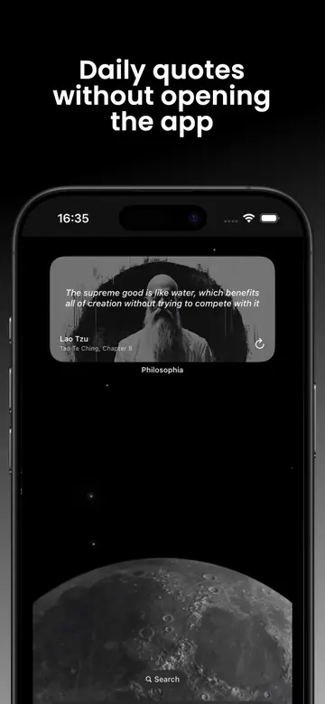

Install and open Philosophia once, then use iPhone's widget gallery for the Home Screen or Lock Screen customization for the Lock Screen. Choose Philosophia, select the available size, and place the widget where you will actually notice it.
Before you add the widget
Download Philosophia from the App Store and open it at least once. This gives iOS a chance to register the app's widget. Read a quote and review your preferences inside the app before adding the widget, especially if you want to focus on selected philosophers or schools.
Philosophia requires iOS 15.3 or later for iPhone. Home Screen widgets are available across supported versions. The public release notes add Lock Screen widget support in version 3.3.0. Lock Screen widgets as a system feature require iOS 16 or later; exact options can vary by iPhone model and current operating-system version.
If Philosophia does not appear in the widget gallery immediately after installation, restart the app first. Updating iOS and the app is a better next step than repeatedly deleting your Home Screen layout.
Add a philosophy quote widget to the Home Screen
- Touch and hold an empty area of the Home Screen until the apps begin to move.
- Tap Edit, then tap Add Widget.
- Search for or scroll to Philosophia.
- Review the available widget sizes and choose the layout that fits your screen.
- Tap Add Widget, drag it to the place you want, and tap Done.
Apple's labels may change slightly between iOS versions, but the underlying sequence remains the same: enter Home Screen editing, open the widget gallery, select the app, choose a size, and place it.
A medium widget usually gives a quotation enough room to remain readable. A smaller widget can work well inside a Smart Stack when you want philosophy to share space with weather, calendar, or reminders. Avoid placing the quote beside visually noisy widgets if your aim is a calm prompt.

Add a philosophy quote widget to the Lock Screen
- Touch and hold the Lock Screen until the customization controls appear.
- Tap Customize and select the Lock Screen.
- Tap the widget area below the clock.
- Select Philosophia and tap or drag the available widget into the layout.
- Close the widget panel, then tap Done to save the Lock Screen.
The Lock Screen has limited space, so use it for a compact cue rather than a complete reading experience. Tap the widget when you want to open Philosophia, see the full quote, check the source, or save the idea.
If you use Focus modes, you can associate different Lock Screens with different contexts. A philosophy quote may fit a morning or personal Focus, while a work Focus remains intentionally minimal. The best placement is one that invites attention without becoming visual wallpaper.
Make the quote widget useful, not invisible
Widgets often disappear psychologically after a few days. Prevent that by connecting the glance to a small behavior. When the quote changes, ask one question: “Where might this matter today?” If the answer is specific, open the app and save the quote to a relevant collection.
Use Philosophia's filters and notification settings inside the app, then let the widget supply the quiet reminder. Save only the ideas that survive contact with your day.
Try placing the widget on your first Home Screen for a week. If it competes with icons, move it to Today View or a cleaner page. You can also add it to a Smart Stack and reorder the stack so the quote appears at a time that suits your routine.
Choose practical collection names such as “Before meetings,” “Perspective,” or “What I control.” A widget becomes more than decoration when it leads to reflection and retrieval.
Troubleshoot missing or stale widgets
Philosophia is missing from the gallery
Open the app, confirm it is updated, return to the Home Screen, and try again. Restart the iPhone if iOS has not registered a newly installed extension. Make sure the app has not been offloaded.
The quote has not changed
iOS controls widget refresh timing to protect battery life. Open Philosophia to confirm the current quote and settings. Check that Low Power Mode or aggressive background restrictions are not affecting refreshes, and allow time for the system to schedule the next update.
The text is too small or truncated
Choose a larger widget size or open the app for the complete text. Quotes vary in length, and a compact widget cannot show every sentence in full. Treat the widget as a doorway to the sourced entry.
The Lock Screen option is unavailable
Confirm that your iPhone runs iOS 16 or later and that Philosophia is current. If the app appears for Home Screen widgets but not Lock Screen customization, restart after updating and recheck the widget area beneath the clock.
A calm setup that works
Use one medium Philosophia widget on a quiet Home Screen, a compact Lock Screen widget for quick access, and one scheduled notification at a natural transition. More prompts do not necessarily create more reflection. The aim is to make one good idea easy to meet and easy to revisit.